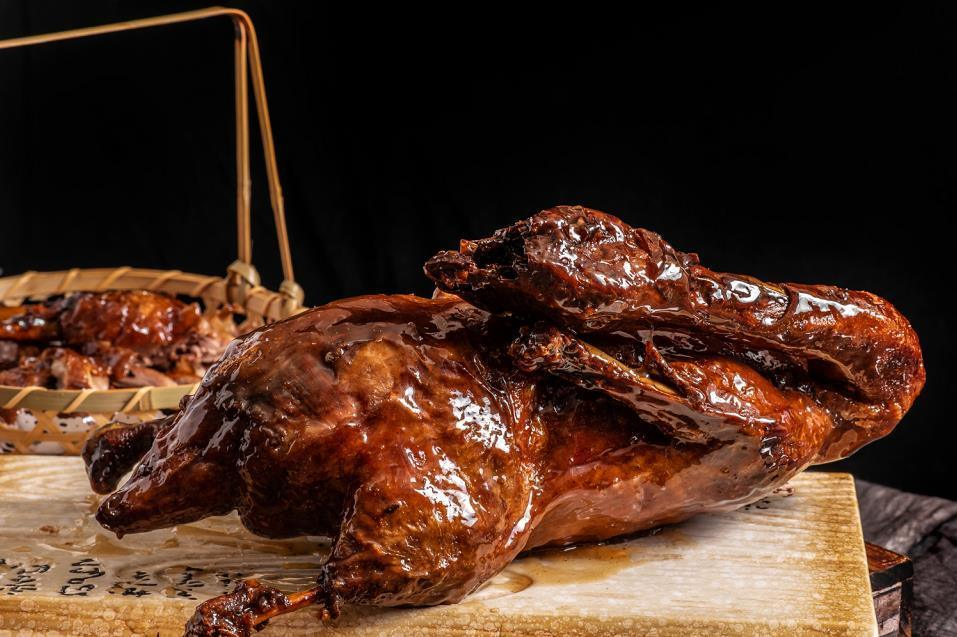
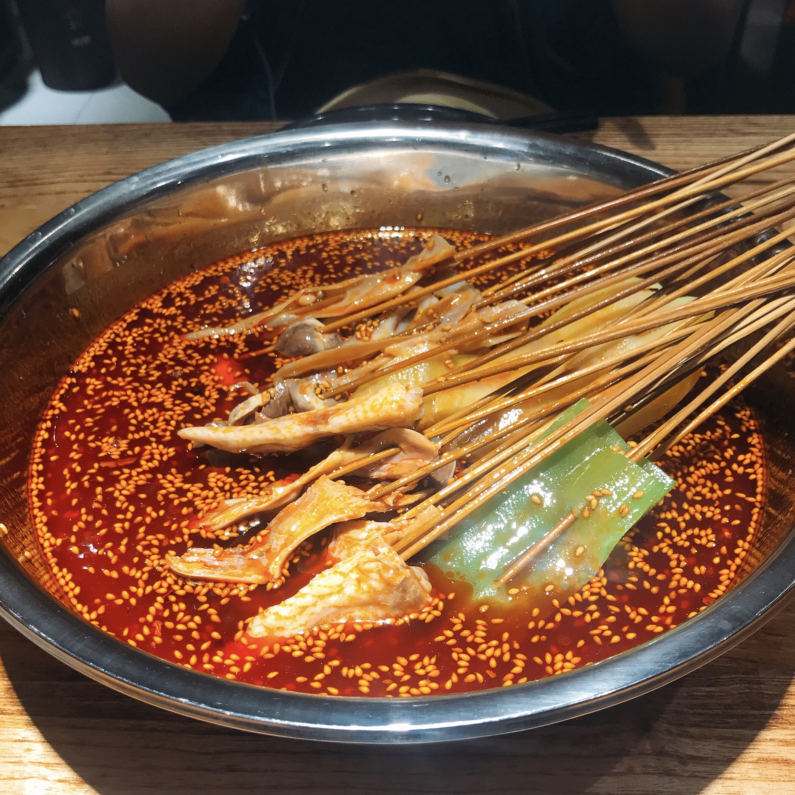
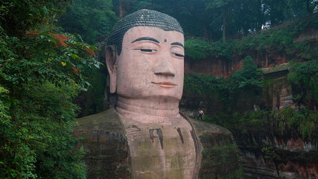

D1峨眉山：报国寺>峨眉山博物馆>伏虎寺>清音阁>一线天>洪椿坪
第一天先从乐山汽车站乘车到天下名山山门，参观位于凤凰湖畔的报国寺和博物馆。报国寺和博物馆周围楠树蔽空，红墙围绕，伟殿崇宏，金碧生辉。随后，走西路经过伏虎寺抵达清音阁。桥下流水过，画面绝美，泉水的声音就像是悦耳的铃声，洗净世界铅华。午餐后短暂休息，经过独特奇险的一线天和生态猴区，给顽皮的猴子喂点吃的，握握手，天黑前到达洪椿坪。

餐饮：中午可在清音阁附近的饭店吃卤鸭，晚上可在洪椿坪附近吃豆花和素菜。由于徒步体力消耗过大，建议游客自带热量较高的饮料和食品。

住宿：晚上可住在洪椿坪附近的农家，依据住宿条件不同，价位不等。峨眉山一山归心客栈 在峨眉山半山腰，环境优美，干净整洁，酒店提供免费的早餐。相较于景区其他酒店而言，价格划算。

D2峨眉山：洪椿坪> 仙峰寺>象池夜月>雷洞坪
第二天从洪椿坪出发，步行约40千米，依次经过仙峰寺，遇仙寺，洗象池后抵达雷洞坪，这条道路耗时较长，且部分路段崎岖难行，须补充好体力，小心慢行。同时要注意携带的贵重物品，不要被猴子抢去。

餐饮：中午可在仙峰寺和洗象池附近的农家吃饭，品尝当地的钵钵鸡，晚上可在雷洞坪尝尝峨眉素菜。推荐自带干粮，因为景区餐馆不多，味道也不能保证。

住宿：晚上可以住在寺庙，但寺庙不能提前预定，旺季时可能住不上。住在雷洞坪也不错，附近有很多酒店，类型不一，价格不等，给你众多选择。
D3峨眉山:接引殿> 金顶
早晨早起抵达最高峰观看峨眉日出，感受第一缕阳光照在金灿灿的佛像身上的震撼，也可等待峨眉云海，幸运的话可以看到雪山。随后，乘坐游览车下山至万年寺，游览峨眉八大寺庙之一的清音阁，随后下山返回乐山市区。

餐饮：午餐可在太子坪或回到雷洞坪附近的农家吃，海拔越高，餐饮越贵。晚上可在乐山市区尝尝正宗地道的跷脚牛肉和西坝豆腐。

可选择居住在乐山大佛附近，方便游览景区，乐山大佛寺内有为游人提供的各类客房，既有不亚于星级宾馆的豪华间，又有价格低廉且洁净舒适的中低档房间。也可以住在乐山客运中心柏杨西路附近的经济酒店，方便出行。
D4乐山：巨型睡佛>乐山大佛>乌尤寺
最后一天首先乘车观赏位于乐山城三江汇流处，乌尤山、凌云山和龟城山三山组合而成的巨型睡佛奇观。随后步行参观乐山大佛景区，360度的仔细观察大佛。最后，乘车前往乌尤山，游览顺山势设计，曲折高低，玲珑雅致，别具一格的乌尤寺，结束这次的行程。

午饭可以在市中心吃到正宗的钵钵鸡，晚上可以去品尝豆腐脑，这是乐山必吃的小吃之一。代四孃牛华豆腐脑美味小食家属于老字号的店，生意很好，外地游客有时候会吃不惯，是因为不太了解本地的饮食习惯。还是值得打卡尝试。

晚上可住在位于市中心客运站，这附近的餐饮业和住宿业比较发达，以快捷酒店为主，也有一些旅馆和星级酒店，价格不等。